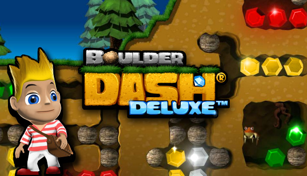

Boulder Dash est un jeu vidéo conçu par Peter Liepa et Chris Gray, et édité par First Star Software à partir de 1984 sur de nombreux supports.
Le principe du jeu consiste à ramasser un nombre défini de diamants pour ouvrir un passage vers le niveau suivant. Le personnage, surnommé Rockford, doit creuser la terre pour se frayer un chemin. Il devra faire attention à ne pas se faire écraser par un rocher. Il devra préparer le terrain pour y arriver.
Les déplacements de Rockford se résument au minimum syndical : quatre directions - pas de diagonales - et la possibilité, en appuyant sur la gâchette puis une direction, d’agir sur l’une des cases adjacentes sans se déplacer. Ces possibilités d’action sont très limitées : creuser, pousser un rocher - dans le sens horizontal - ou ramasser un diamant sont, au final, les seules tâches que le joueur aura à accomplir.
Toutefois, l’on est vite étonné de constater à quel point pareille simplicité peut engendrer tant de complexité. Composer avec les rochers et leur disposition, tout d’abord, n’est pas chose aisée. Dans la mesure où Rockford se montre incapable de pousser plus d’un rocher à la fois, chaque décision de déplacement peut rapidement mener le joueur dans une impasse dont il sera incapable de sortir. Au pire, ce sera la chute d’un rocher surplombant la galerie qui causera sa perte. Dans tous les cas, c’est la mort qui attend le joueur, contraint d’user de la touche « suicide » plus souvent qu’il ne l’aimerait
Un projet de Maxime Falkowski et Justin Masson